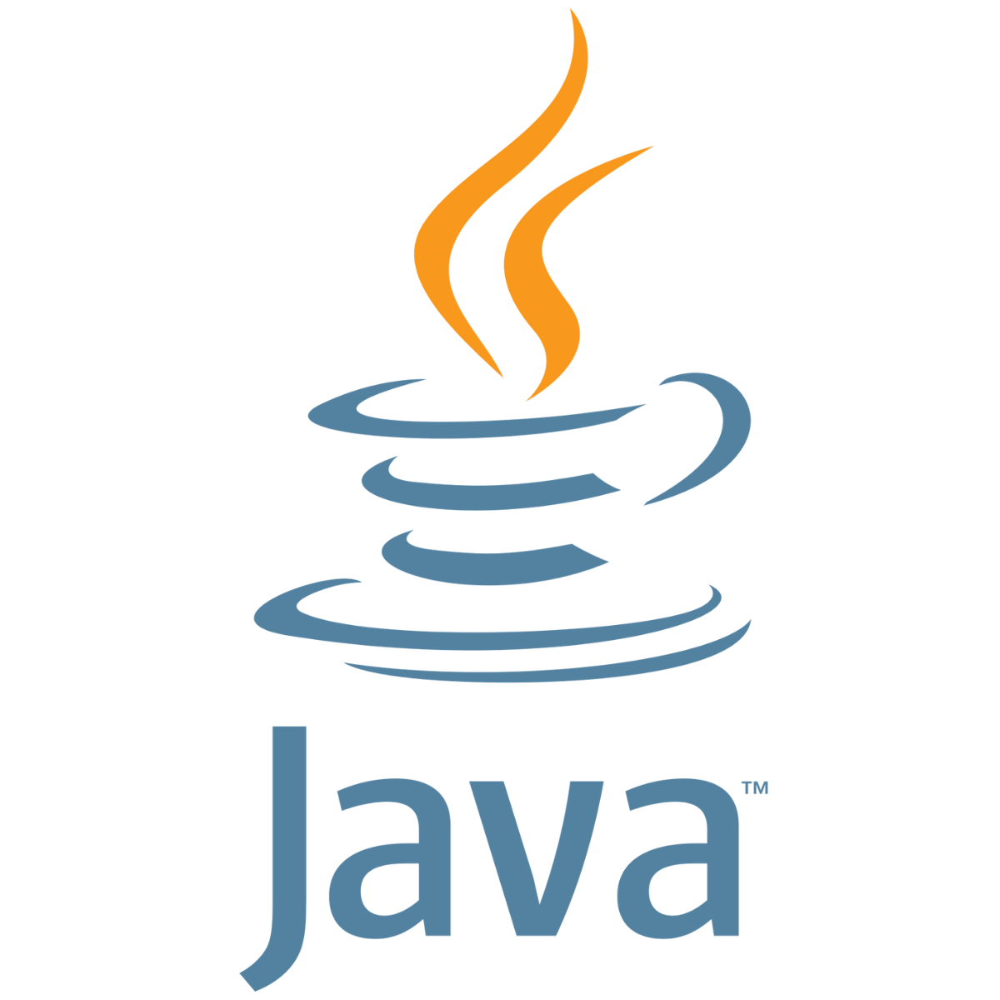
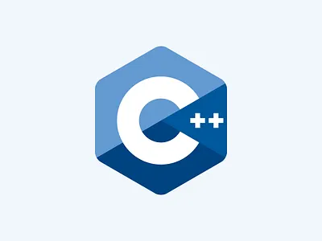

Sobre mim
Sou estudante de Sistemas de Informação na UFS, com experiência em Python, Java, C/C++ e conhecimentos básicos em SQL e HTML/CSS. Tenho interesse em desenvolvimento de software, lógica de programação e tecnologia.
Habilidades
Python
Java
C
C++
HTML
CSS
SQL
Git
GitHub
Projetos

Sistema de Cadastro em Python
CRUD em Python com armazenamento em arquivo e menu interativo.
Ver no GitHub
Sistema de Biblioteca em Java
Aplicação Java orientada a objetos para gerenciamento de livros.
Ver no GitHub
Jogo Queah
Implementação do jogo Queah usando arquivos e biblioteca gráfica raylib.
Ver no GitHubContato
Email: passosyasmim08@gmail.com
GitHub: github.com/yasmim-passos